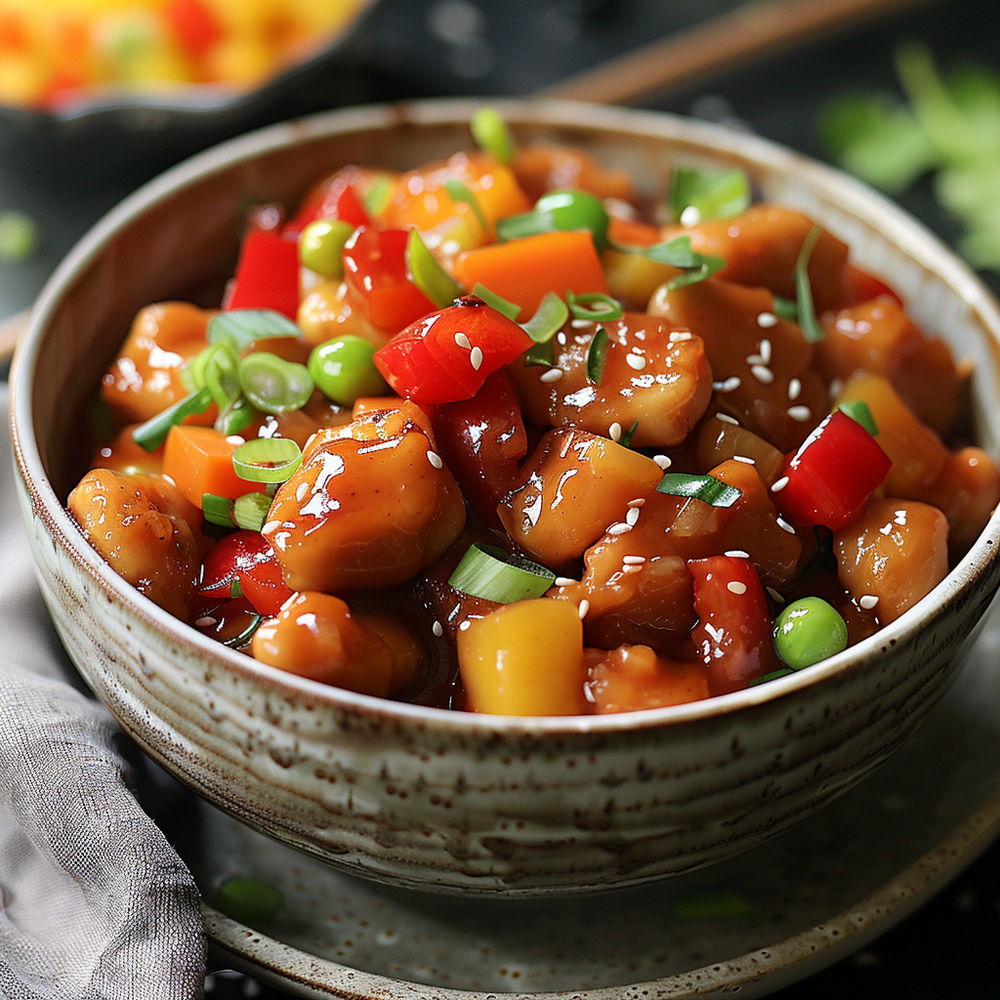

Sweet and Sour Chicken

Ingredients
- 1 lb chicken breast, cut into bite-sized pieces
- 1 cup cornstarch, for coating
- 2 eggs, beaten
- 1 cup pineapple chunks
- 1 red bell pepper, chopped
- 1 green bell pepper, chopped
- 1 onion, chopped
- Oil for frying
For the Sauce:
- 1/2 cup sugar
- 1/4 cup ketchup
- 1/4 cup vinegar
- 1 tablespoon soy sauce
- 1 teaspoon garlic powder
- 1/2 cup water
-
2 tablespoons cornstarch (mixed with 4 tablespoons water for slurry)
Instructions
-
Coat the chicken pieces in cornstarch, dip into beaten eggs, and
then fry in hot oil until golden and crispy. Remove and set aside.
-
In a saucepan, combine sugar, ketchup, vinegar, soy sauce, garlic
powder, and water. Bring to a simmer.
-
Add the cornstarch slurry to the sauce, stirring constantly until
the sauce thickens.
-
In a separate pan, sauté the pineapple, bell peppers, and onion
until just tender.
-
Add the fried chicken to the vegetables, then pour the sweet and
sour sauce over. Stir well to combine.
- Serve the sweet and sour chicken hot with rice or noodles.